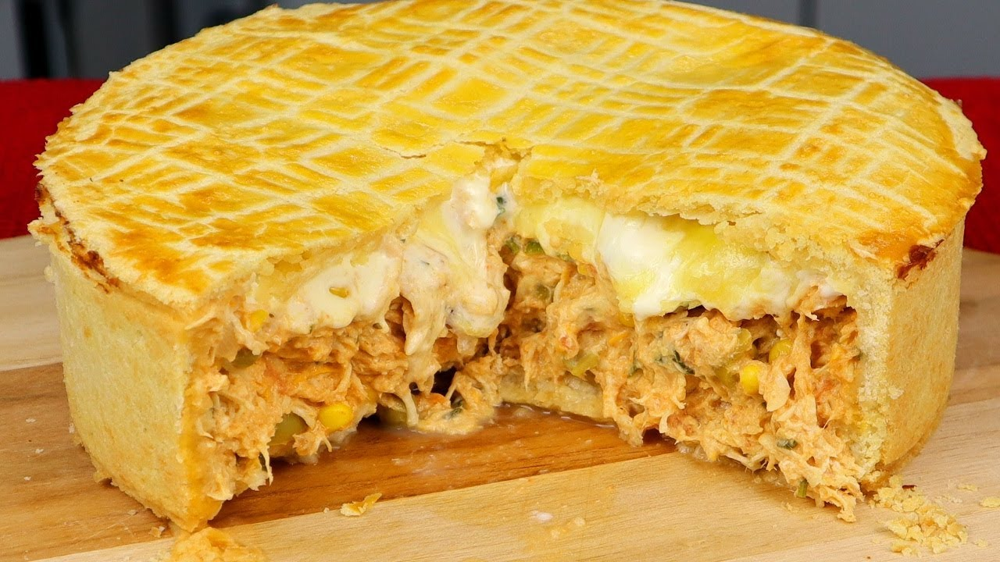

Torta de frango com catupiry
Por Enrico Lona 20/03/2023

RECHEIO
- 1/2 litro de água
- 2 tabletes de caldo de galinha
- 4 colheres de azeite
- 2 dentes de alho picado
- 1 cebola picada
- 3 tomates sem pele e sem semente
- 1 xícara de milho
- 1 xícara de palmito
- 1 copo de catupiry ou requeijão
- sal a gosto
- pimenta a gosto
- 500 g de peito de frango
MASSA
- 500 ml de leite
- 250 ml de óleo
- 2 ovos
- 1 e 1/2 de xícara de farinha de trigo
- sal a gosto
- 1 colher (sopa) de fermento em pó
- queijo ralado a gosto
COMO FAZER
RECHEIO
- Cozinhe o frango na água com os tabletes de caldo de galinha até ficar bem macio a ponto
de desfiar, depois retire a água do frango, deixe separada para utilizar depois e desfie
o frango.
- Em uma panela, coloque o azeite, o alho, a cebola e os tomates picados e deixe fritar um
pouco.
- Adicione o frango, a água e o milho e deixe cozinhar até secar quase toda a água, deixe
um pouco de água para que não fique muito seco, adicione o sal e a pimenta, quando
estiver com a água quase seca acrescente o palmito.
MASSA
- No liquidificador, bata o leite, óleo e ovos, depois acrescente aos poucos a farinha,
fermento e o sal.
- Unte a forma com óleo, despeje metade da massa, cubra a massa com todo o recheio,
despeje o catupiry ou requeijão por cima espalhando-o bem, cubra o recheio com o resto
da massa e finalize cobrindo com queijo ralado.
- Leve ao forno preaquecido e deixe assar na temperatura de 180° C por mais ou menos 40 a
50 minutos ou até que esteja dourado.